Futurable
Futurable
TECH WEEK YUCATÁN · 19 DE OCTUBRE
El futuro del valor humano.
La tecnología está cambiando el trabajo y nuestro lugar en la economía. ¿De qué vas a vivir? ¿Qué te hará valioso?
Alejandro Vélez · Futurable
LOS MIEDOS
Lo que todos estamos pensando
- "La IA me va a quitar el trabajo."
- "Mis hijos no van a tener en qué trabajar."
- "Ya no entiendo nada de lo que está pasando."
73% de los jóvenes en EE. UU. cree que la IA dejará menos empleos.
En México, 61% teme que la IA desplace empleos.
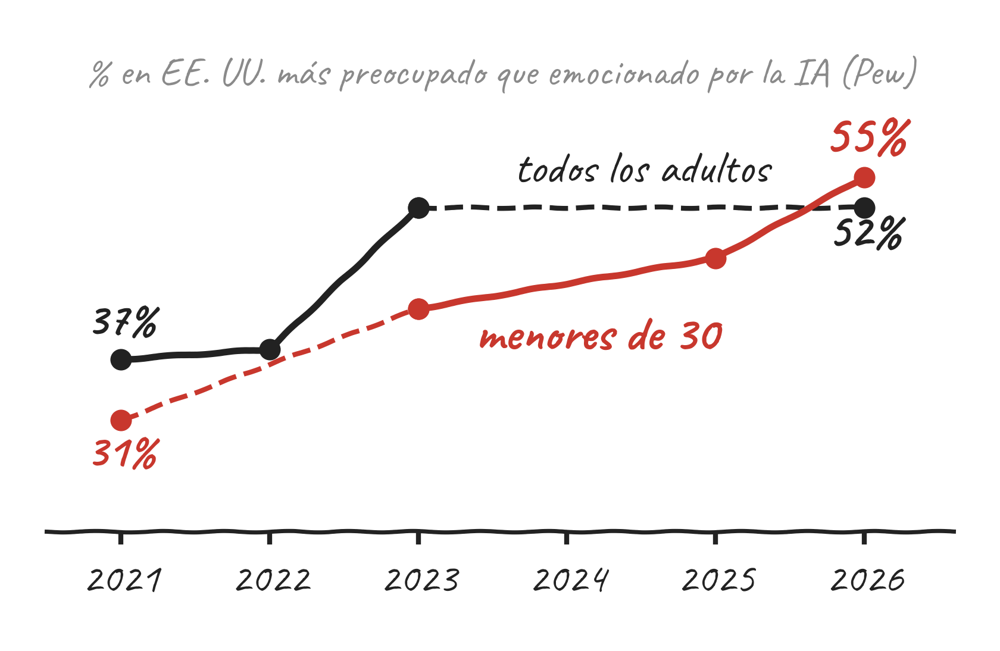
Fuentes: Pew Research Center (2023 y jun. 2026) · YouGov México (2023)
EL RUIDO
El mapa del ruido
Futurable no diseña los futuros probables, sino los necesarios.
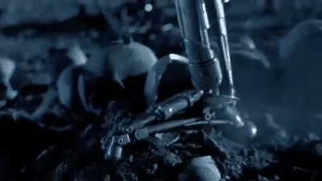

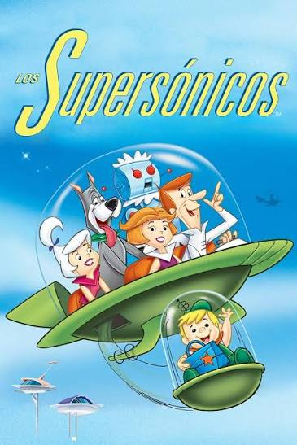
LOS DATOS
Promesas vs. datos
- Para 2030 se crean más empleos de los que se pierden, pero no son para las mismas personas.
- Ya está pasando: el empleo de jóvenes (22–25 años) en trabajos expuestos a la IA cayó 13% en EE. UU.
- Semana de 4 días: en el piloto del Reino Unido, 56 de 61 empresas la mantuvieron.
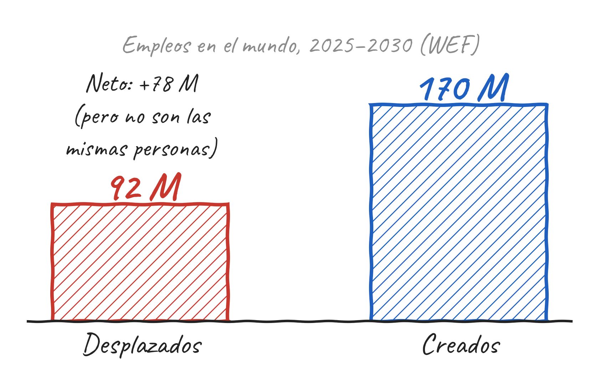
Fuentes: World Economic Forum, Future of Jobs 2025 · Stanford, "Canaries in the Coal Mine" (2025) · Autonomy, piloto 4 días (2023)
LA GRAN TRANSICIÓN
Cuatro cambios que convergen
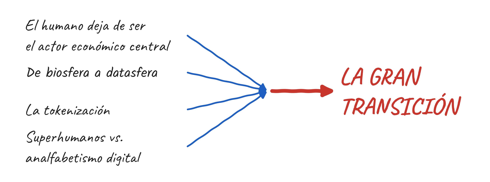
CONVERGENCIA 1 DE 4
Hacia una economía machine to machine
- El humano pierde peso como productor de valor y también como consumidor.
- Más de la mitad del tráfico de internet ya no es humano: 53% son bots.
- En Cloudflare, los bots ya hacen 57.5% de las solicitudes de páginas web; los humanos, 42.5%.
- Los agentes de IA empiezan a comprar, negociar y pagar entre ellos.
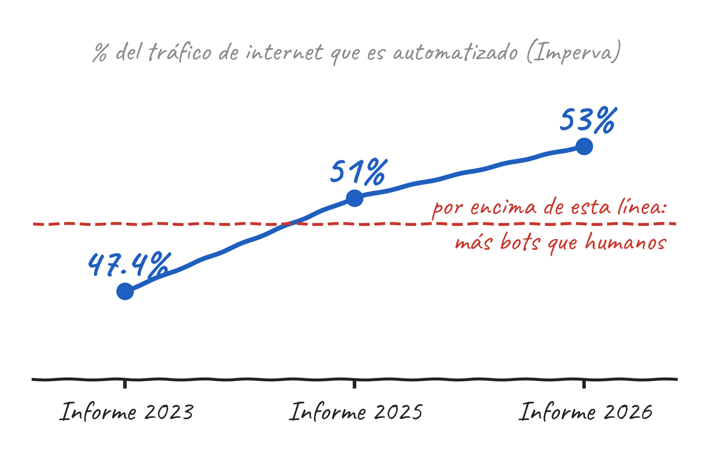
Fuentes: Imperva, Bad Bot Report 2023, 2025 y 2026 · Cloudflare Radar, jul. 2026
CONVERGENCIA 2 DE 4
La datasfera
- Sobre la biosfera crece una nueva capa: los data centers.
- Para 2030 consumirán más del doble de electricidad que en 2024.
- En México: 279 MW instalados y 1,730 MW anunciados; 72% en Querétaro.
- Compiten con la vida por energía, agua y territorio.
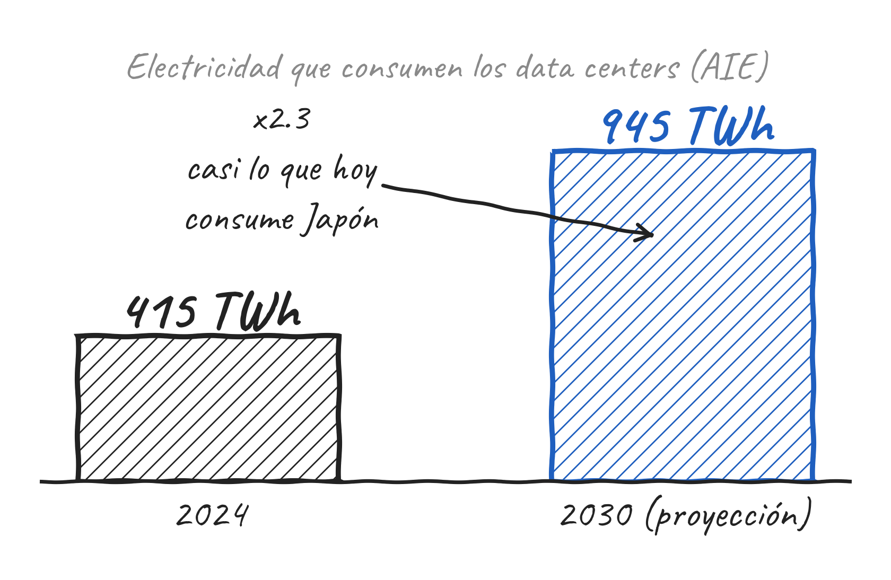
Fuentes: Agencia Internacional de Energía, Energy and AI · MexDC vía Líder Empresarial, jun. 2026
CONVERGENCIA 3 DE 4
¿Qué es tokenizar?
Un cambio en cómo se certifica la propiedad.
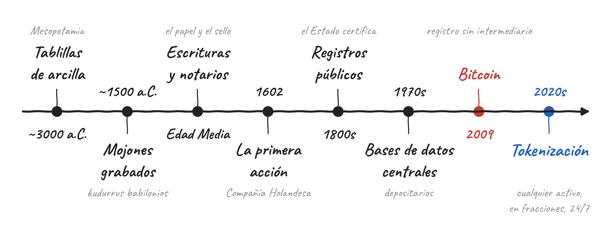
Línea de tiempo esquemática. Fechas aproximadas.
CONVERGENCIA 3 DE 4
Todo se está tokenizando
El dinero
Stablecoins: dólares digitales que se mueven 24/7 en segundos. Ya suman ~$316,000 millones.
La deuda
Bonos del Tesoro de EE. UU. tokenizados: ~$15,000 millones. BlackRock lidera con su fondo BUIDL.
Las acciones
En marzo de 2026 la SEC aprobó que Nasdaq negocie acciones tokenizadas. La meta: una bolsa 24/7.
Los bienes raíces
Propiedades divididas en fracciones: ser dueño de un pedazo de un edificio sin comprarlo completo.
Fuentes: DefiLlama vía Transak (jun. 2026) · Bitcoin.com News, mercado de bonos tokenizados (ago. 2026) · Forklog, aprobación SEC–Nasdaq (mar. 2026)
CONVERGENCIA 3 DE 4
Wall Street ya está tokenizando
| Quién | Qué tokeniza | Tamaño |
|---|---|---|
| BlackRock | Fondo de bonos del Tesoro (BUIDL) | ~$2,800 M |
| JPMorgan | Pagos y repos en su red Kinexys | +$1.5 billones acumulados |
| Ondo Finance | Portafolio de activos reales | ~$2,500 M |
| Franklin Templeton | Fondo de mercado de dinero (BENJI) | +$1,000 M |
| Nasdaq | Acciones del Russell 1000 y ETFs | Aprobado por la SEC, mar. 2026 |
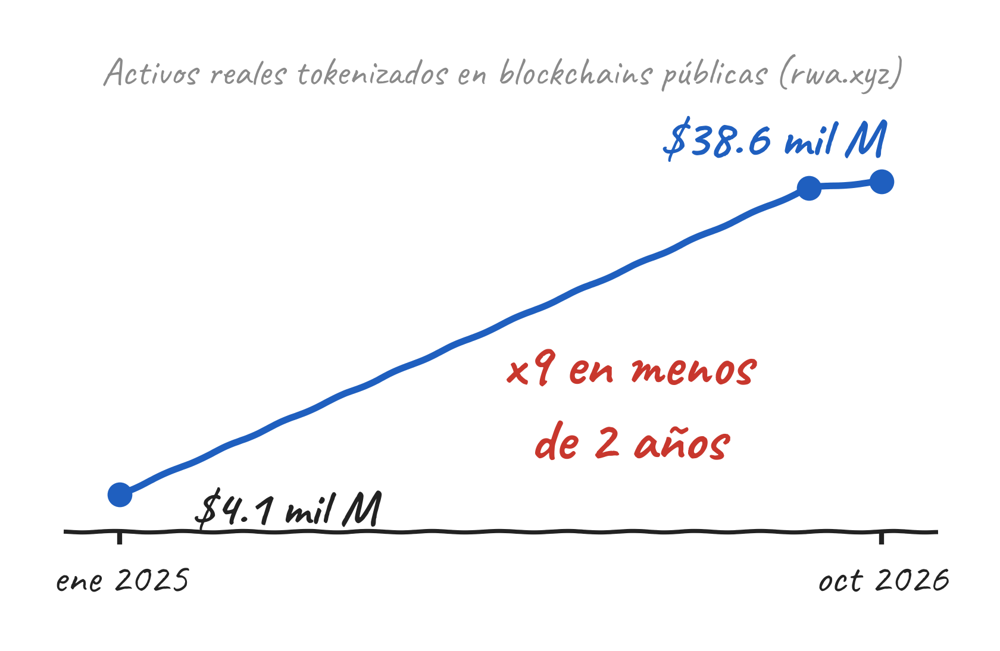
Cifras en dólares. Fuentes: rwa.xyz (oct. 2026) · Bitcoin.com News (ago. 2026) · Algeriatech, "Wall Street's On-Chain Shift" (mar. 2026) · Forklog (mar. 2026)
CONVERGENCIA 4 DE 4
Superhumanos vs. analfabetismo digital
- Quien adopta la IA multiplica lo que puede hacer: Sam Altman apuesta por la primera empresa de mil millones de dólares con una sola persona.
- Quien no, queda en un nuevo analfabetismo digital.
- La brecha ya no es entre países: es entre personas del mismo barrio.
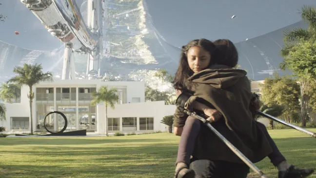
Imagen: Elysium (2013)
CONVERGENCIA 4 DE 4
La historia de los analfabetismos
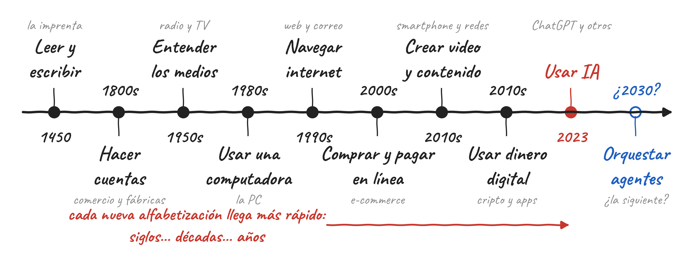
Fechas aproximadas: cuándo cada habilidad se volvió necesaria para participar en la economía. Ilustrativo.
Idea: Astro Teller, en Thomas Friedman, "Thank You for Being Late" (2016)
EL CEREBRO de los SAPIENS
Demasiado cambio, muy rápido
- Nuestro cerebro evolucionó para cambios lentos, no para cuatro revoluciones al mismo tiempo.
- Alvin Toffler lo llamó "el shock del futuro".
- Sentirse abrumado es normal. Quedarse paralizado es opcional.
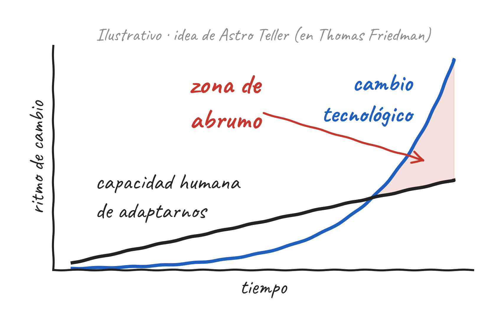
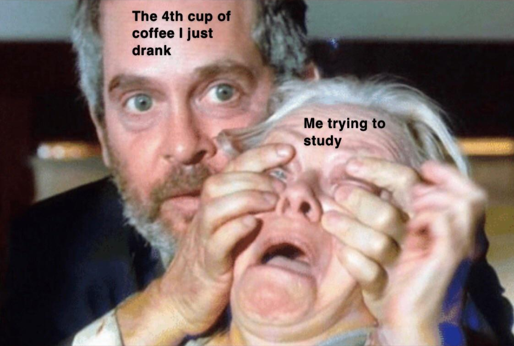
LOS DOS RETOS
Ante esta transición, enfrentamos dos grandes retos
- ¿Cómo vamos a sobrevivir financieramente?
- ¿Cómo vamos a seguir encontrando sentido de vida como humanos?
RETO 1 · SOBREVIVIR
De trabajador a administrador de activos
- Antes: educarse, prepararse y trabajar, trabajar, trabajar.
- Ahora: aprender a ver, comprar y posicionar activos que generen flujo de efectivo.
- Es un espectro, no un salto de golpe.
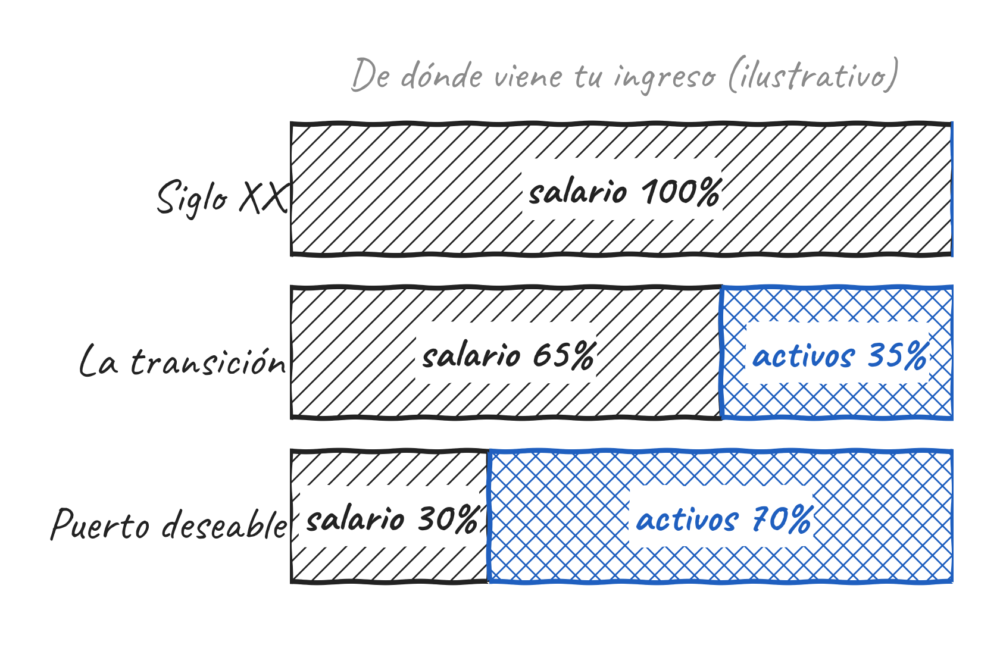
Gráfica ilustrativa, no una proyección.
RETO 2 · SENTIDO
"El trabajo dignifica"... ¿y si ya no hay trabajo?
- Nos educaron para creer que valemos porque trabajamos: "ganarás el pan con el sudor de tu frente".
- Jubilarse aumenta en ~40% la probabilidad de sufrir depresión clínica.
- Muchos emprendedores que venden su empresa reportan vacío y pérdida de propósito.
Fuente: Institute of Economic Affairs, Reino Unido (2013)
RETO 2 · SENTIDO
Nos educaron para comportarnos como robots.
Hacer caso. Seguir procesos. Cumplir horarios.
Y ahora que los robots llegaron... ¿qué hacemos? ¿Volver a nuestra esencia humana?
¿Y si ya se nos olvidó cómo imaginar?
RETO 2 · SENTIDO
Seguimos siendo animales
- Aunque todo se digitalice, los sapiens necesitamos pertenecer, convivir, mover el cuerpo y estar en la naturaleza.
- El estudio más largo sobre felicidad (Harvard, más de 85 años): lo que más predice una vida buena son las relaciones.
- Diseñar tu estilo de vida: cuando tengas tiempo libre, ¿en qué lo vas a usar?
Fuente: Harvard Study of Adult Development
FUTURABLE
El Gran Salto
Para saltar no basta la fuerza: hay que saber hacia dónde apuntar.
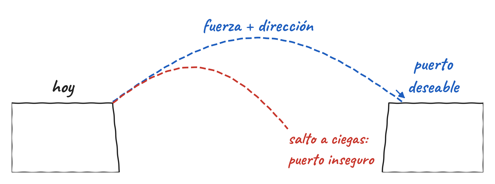
FUTURABLE
De lo posible a lo necesario
No mapeamos el futuro para predecirlo. Lo mapeamos para diseñar una estrategia y agenciarlo.
| El espacio de lo posible | El espacio de lo necesario |
|---|---|
| Mejoras incrementales | Soluciones a gran escala |
| Parches que no resuelven el fondo | Enfriar ciudades enteras de forma pasiva |
| Predecir tendencias | Estabilizar el manto freático |
| Reaccionar al cambio | Restaurar biomas y funciones ecológicas |
Cuando la data y la razón dicen "imposible", Futurable dice "necesario".
ESTACIÓN INTERACTIVA
¿Qué tan preparado estás para el salto?
- ¿Dónde estás hoy?
- ¿Dónde te quieres ver?
- ¿Qué tan fuerte está tu músculo para imaginar y reinventarte?
Haz tu diagnóstico en futurable.work/arca
Alejandro Vélez · Futurable · futurable.now